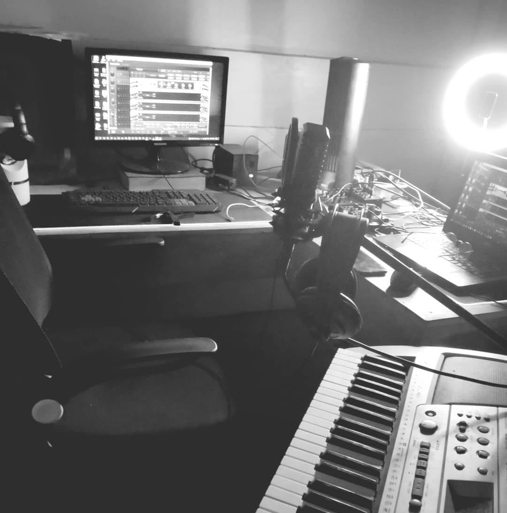

Music Production
One of my favorite musical activities is Music Producing for various bands and artists : recording, mixing and mastering.
I work in a range of genres including, rock, reggae, alternative, pop, blues, lofi.
At the moment, I have been working for recording, mixing, mastering almost all tracks by the biggest San Francisco independent label "Bag-ong Duyog" based in Agusan del Sur.
Currently I work as a freelance music producer, recording at Parsonage Recordings and Room 416 studio in San Francisco(where I recorded the "Bag-ong Duyog" Album); mixing and mastering at my home studio. I will be gladly contacted for mixing / mastering jobs.
These are some of the projects I’ve participated in so far:
Alay
Talmids
Produced, Mixed & Mastered by CJ Cebuala
Sa Bagong Panahon
Friyad
Produced, Mixed & Mastered by CJ Cebuala and Rojh Baquiran of the North Hit Project
Kagawasan
Friyad
Produced, Mixed & Mastered by CJ Cebuala
Magdiwa ta, Magdiwata!
Jomari Kevin Adlao Ft. Eunice Luarez
Produced, Mixed & Mastered by CJ Cebuala
Here at SOCOTECH
SOCOTECH BAND
Produced, Mixed & Mastered by CJ Cebuala at Room 416
Dakila
Friyad
Produced, Mixed & Mastered by CJ Cebuala
Selene
Friyad
Produced, Mixed & Mastered by CJ Cebuala
Kabataan Sa Pagkatoto (Raw Version)
ASNHS Band
Produced, Mixed & Mastered by CJ Cebuala
Chit Chat Ato Ni
Friyad
Produced, Mixed & Mastered by CJ Cebuala